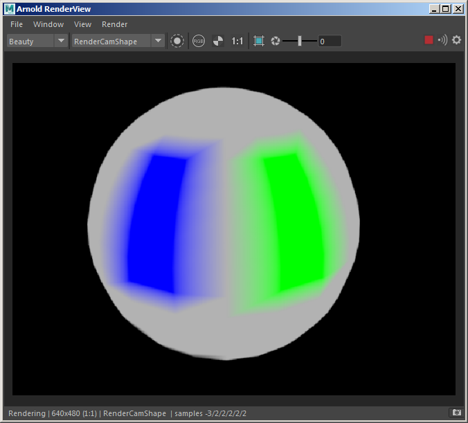

以下设置通过几何体对象的属性编辑器提供。
暂不支持导出 NURBS 曲面的设置。
将每个顶点的切线信息导出为向量类型的 Arnold 用户数据。稍后可以在着色器中查询此用户数据以用于不同的计算。请参见以下示例：
启用“导出切线”(Export Tangents)
渲染时，您将看到使用颜色表示的球体切线：
将每个顶点的颜色信息导出为 RGBA 类型向量的 Arnold 用户数据。稍后可以在着色器中查询此用户数据以用于不同的目的，如遮罩。请参见以下示例：
将着色器指定给网格（在本例中是 ray_switch）并将 *aiUserDataColor** 节点连接到其颜色输出（使用 *ray_switch 时为“摄影机”(Camera)属性）。
在 aiUserDataColor 节点的“颜色属性名称”(Color Attr Name)中键入要使用的颜色集的名称。本例中为“colorSet1”。请注意，名称区分大小写。
渲染时，您将看到球体顶点颜色表示。

此选项可在多边形网格的 Pref 用户数据参数中导出纹理引用对象的顶点位置。Pref 位置可与程序纹理结合使用，避免在网格扭曲时发生游移。
已禁用“导出引用位置”(Export Reference Positions)（左）。已启用“导出引用位置”(Export Reference Positions)（右）
Maya 3D 纹理投影将始终使用引用位置（如果可用）。但是，可以通过一个选项在 3D 纹理节点的 Arnold 属性中将其禁用。例如，如果要将引用点用于使用 3D 分形纹理（使其粘滞）的置换和您不希望粘滞或由于置换而扭曲的投影颜色纹理贴图，则此选项可能非常有用。
启用“使用引用对象”(Use Reference Object)（默认）时的 Maya 3D 纹理投影。
NURBS 对象当前不支持 PREF 用户数据。如果存在纹理引用对象并选中“导出引用位置”(Export Reference Positions)，则 MtoA 将不会导出其 PREF。
此选项可在多边形网格的 Nref 用户数据参数中导出纹理引用对象的法线。Nref 可在 Maya 投影着色器的三平面模式下使用。
此选项可在多边形网格的 Tref 和 BTref 用户数据参数中导出纹理引用对象的切线和双切线。这些切线和双切线可在自定义着色器中使用。